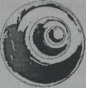

Lúc đi dọc đường hầm, Jake miết một ngón tay lên một bờ tường. Từng tảng đá được đặt khít với nhau hoàn hảo, không phải được chất chồng lên nhau mà khít như trong trò chơi xếp hình, mỗi viên đá đều có một hình dạng riêng biệt. Vậy mà mép nối giữa những tảng đá khít đến mức Jake ngờ là một lưỡi dao cạo cũng không chen vào giữa nổi.
Phía trước, ánh sáng càng lúc càng rực rỡ hơn. Jake cảm thấy một nhịp đập trong không khí, như thể có một cái gì đó thít chặt ngực cậu; buông ra, rồi lại thít lại. Càng đi, cảm giác nọ càng rõ ràng hơn.
Pindor xoa xoa bụng, nó cảm nhận điều đó ở bụng mình. Ngay trong tình cảnh nguy hiểm này, Marika vẫn có thể nhíu mày lại vì tò mò. Chỉ có Bach’uuk là có vẻ không hề hấn gì. Nhưng có thể do nó từng tới đây trước rồi.
Hành lang vẫn tiếp tục chúc xuống, nhưng có vẻ như lối ra đã ngay trước mặt. Mạch đập càng lúc càng mạnh mẽ hơn, ánh sáng rực rỡ hơn bao giờ hết khi đường hầm mở ra một căn phòng mênh mông, với kiểu kiến trúc mái vòm như phòng Thiên Văn.
Jake chết lặng trước điều đang bày ra trước mắt cậu.
Một khối ngọc thạch hình cầu hoàn hảo lơ lửng ở trung tâm phòng. Khối ngọc chầm chậm tự xoay quanh mình; cứ thế treo lơ lửng giữa không trung bên dưới mái vòm. Khối ngọc vẫn sáng đều, nhưng Jake vẫn cảm thấy mạch đập của nó theo mỗi vòng xoay.

Trái tim ngọc Kukulkan!
Mạch đập ấy chính là nhịp tim của nó.
Mắt Jake dần quen với ánh sáng rực rỡ ấy, cậu thấy một điều khác càng khiến cậu kinh ngạc hơn. Khối cầu thực chất gồm ba khối ngọc lồng vào nhau, như những con búp bê Nga. Hai lớp xoay theo hai hướng khác nhau: một xoay từ trái sang phải; một từ phải sang trái. Lớp thứ ba lại xoay theo chiều dọc từ trên xuống dưới. Trên bề mặt ba khối cầu đều khắc những kí tự lạ lùng; những kí tự nọ chuyển động tạo thành những kết hợp lạ lùng, như thể một thứ máy điện toán bằng ngọc thạch vậy.
Marika vượt lên Pindor và Bach’uuk bước tới. Mắt nhỏ tròn xoe. Sàn bên dưới nghiêng xuống thành một lòng chảo bên dưới trái tim ngọc. Dưới quả cầu lớn đang xoay có ba mẫu vật thu nhỏ. Một ngọc lục bảo, một hồng ngọc, một ngọc lam.
Lại là ba màu cơ bản.
Jake liếc nhìn huy hiệu học việc bằng bạc của mình. Ba mẩu ngọc thạch hệt như vậy tạo thành một tam giác xung quanh viên kim cương. Cậu nhận ra mô hình sắp đặt đó chính là một bản thu nhỏ của cách bố trí ở đây. Viên kim cương là biểu tượng của quả tim ngọc. Ba viên đá quý các màu tượng trưng cho ba quả cầu bé hơn.
Bị mê hoặc hoàn toàn, cậu lại đắm đuối nhìn trung tâm căn phòng.
Dưới quả tim ngọc khổng lồ, ba hình cầu nhỏ cũng tự xoay quanh mình, nhìn như những mặt trăng bé bị buộc vào quỹ đạo của một hành tinh lớn phía trên - à mà chỉ có hai quả cầu quay thôi chứ.
Khối ngọc lục bảo có vẻ như đang run lên lẩy bẩy, và trong khi hai khối ngọc kia tỏa ra ánh sáng từ bên trong lòng chúng thì viên ngọc xanh lục chỉ một màu u tối, mờ mịt. Rõ ràng nó bị cái gì đó.
Từ một góc hành lang tối ở đầu bên kia mái vòm, bóng tối loang ra, rõ ràng nguyên cớ của mọi chuyện đang lộ diện. Bóng tối bao bọc quanh một hình người; nhưng không ai nhìn rõ thật sự đó là cái gì. Bóng đen trùm kín hình người nọ, lại trào ra chung quanh như một thứ lửa đen kịt.
Hẳn đó là kẻ thủ ác Bach’uuk đã thấy, kẻ đã tuôn chạy khỏi Kalakryss.
Jake lùi lại vào đường hầm, kéo Marika theo. Bóng đen hình người - nếu đó thực là người - quỳ xuống cạnh viên ngọc xanh lục, chạm tay vào bề mặt. Bóng tối tuôn đổ ra từ những ngón tay của hắn và ngấm vào trong viên ngọc lục bảo. Viên ngọc càng run rẩy dữ dội hơn.
Kẻ thủ ác dường như đang làm gì đó để cầm giữ; hoặc có thể là hủy hoại quả cầu ngọc này. Nhưng để làm gì? Hắn được gì chứ? Jake nhớ Marika từng nói về những món quà của Kukulkan, nhỏ nói về trường tỏa ra từ kim tự tháp; ban cho tất cả mọi người một ngôn ngữ chung duy nhất, bảo vệ thung lũng khỏi mọi hiểm nguy và truyền sức mạnh cho những viên ngọc thạch khác trong thung lũng.
Ba món quà... ba quả cầu ba màu khác nhau.
Hai món quà vẫn còn - tiếng nói và quyền năng của ngọc thạch, nhưng còn món quà thứ ba đã mất. Rào bảo vệ đã mất. Giờ Jake mới biết làm sao lực lượng của Chúa Sọ lại xuyên thủng được phòng ngự của thung lũng. Jake đang chứng kiến điều đã diễn ra. Sinh vật ấy đang tác động vào nguồn, làm lớp rào cản bảo vệ ấy yếu đi bằng cách đầu độc chính khối cầu lục.
Phải cản hắn lại trước khi toàn bộ thung lũng bị hủy diệt.
Jake bước ra. Cậu nhón gót lên, bật sẵn cây đèn bút. Nếu hành động lặng lẽ, có thể cậu sẽ bất ngờ tấn công tên sát thủ bóng đêm ấy. Với khả năng rọi xa của chùm tia sáng đến bút thậm chí cậu không cần phải đến quá gần nữa. Đáng để thử.
Jake đưa tay ra hiệu cho mấy đứa kia lùi lại. Cậu tiếp tục bước thêm một vài bước - bên ngoài bỗng vang lên một tiếng rú man dại của lũ grakyl. Jake rùng minh vì âm điệu đắc thắng rõ ràng trong tiếng rú rít của bọn chúng. Cậu lo ngại cho điều có thể đã xảy ra với mọi người trong thung lũng. Nhưng trong lúc này, tiếng rú đó rõ ràng là thảm họa cho Jake.
Bóng đen nghe tiếng động đó thì tò mò thoáng nhìn ra phía lối vào. Khuôn mặt méo mó dị hình của hắn chĩa thẳng vào Jake. Jake đờ ra như thể bị chính chùm tia sáng của cây đèn bút chiếu vào. Sinh vật nọ lao đến cùng với cả khối bóng đêm bên dưới hắn. Hắn xông thẳng vào Jake.
Cuối cùng Jake cũng hoàn hồn, cậu giơ cây đèn bút ra chiếu thẳng vào vùng bóng đêm che giấu gương mặt hắn. Tia đông cứng rọi xuyên qua cái bóng, bóng đen bị chùm tia sáng rọi vào tản ra hai bên như dòng nước.
Sinh vật nọ né sang một bên. Jake gần như đã thấy được gương mặt ẩn sau lớp mặt nạ đó - thì bỗng chùm sáng của cây đèn bút chập chờn rồi tắt hẳn.....
Jake hoảng hồn vung vẩy cây đèn pin. Điều đó làm cây đèn pin lóe lên thêm được một giây nữa rồi tắt hẳn. Bóng đen lại phủ lên gương mặt nọ, che kín mặt mũi hắn.
Hắn đưa tay lên, bóng tối theo đó từ thân người hắn loang ra, trùm lên phần thân dưới của Jake. chân Jake đột nhiên lạnh ngắt. Bóng tối đặc lại như một thứ hắc ín. Jake không cách gì động đậy được.
“Jake!” Marika gào lên.
“Ở yên đó! ” Cậu thét lên, không thì cả bọn sẽ bị tóm hết mất.
Gã nọ có vẻ như hoàn toàn dễ dàng băng qua bóng đêm tiến về phía Jake. Mặc dù hắn không có mặt, Jake vẫn có thể hình dung ra hắn đang mỉm cười đắc thắng.
Hắn cất lời, những lời của hắn như bị bóng đêm thít nghẹt lại “Ngươi đã thoát khỏi bẫy của ta. Chủ ta sẽ hài lòng lắm. Ngài đã sắp sẵn kế hoạch lớn cho nhà ngươi.”
Jake chẳng biết hắn đang lảm nhảm cái gì. Cậu điên cuồng lắc cái đèn pin, nhưng chắc cây đèn đã hết sạch pin rồi.
Jake nghe tiếng bước chân chạy sau lưng. Cậu quay lại nhìn, Marika, Pindor và Bach’uuk đang ào đến hỗ trợ, xông thẳng vào bóng đêm. Tụi nó không chịu nghe lời gì cả. Lòng cậu lẫn lộn cảm xúc. Cậu vừa thấy nhẹ nhõm một cách ích kỉ lại vừa lo sợ cho những người bạn mới.
Pindor rơi trước, trượt chân ngã đập mặt xuống cái vũng đen ngòm. Bach’uuk và Marika nhào qua người Pindor như băng qua cái cầu. Bach’uuk giẫm lên vai Pindor lấy đà rồi quay lại ôm eo nhỏ nhấc lên thả về phía Jake. Nhỏ bay ngang qua cái vũng, đáp xuống cách cậu hai bước - liền sau đó nhỏ bị ngập tới hông y hệt như Jake.
Nhỏ cố bước, vùng vẫy phần thân trên, nhưng không cách gì động đậy. Càng vùng vẫy thì gã bóng đêm nọ lại càng khoái chí.
Hắn phát ra tiếng cười khùng khục bị đè nén lại, nhưng tiếng cười nọ không một chút ấm áp mà lạnh như băng.
"Con gái quốc sư và con trai trưởng lão. Một thằng bé người Ưr nữa. Bọn mi nghĩ có thể cản được bước Chúa Sọ sao?”
Bóng đêm lại phá lên cười.
"Jake..." Marika nói gì đó sau lưng cậu.
Jake nhìn lại. Marika sờ tay vào cổ họng nhỏ, gõ gõ ngón tay vào phía dưới cằm, như thể cố ra hiệu cho cậu. Cậu không hiểu ý nhỏ. Tay kia của nhỏ thò ra sau lưng. Nhỏ cầm trong tay một cây gậy dài thanh mảnh, đầu đính một khối ngọc thạch rực cháy. Đó là cây đũa dò mạch của cha nhỏ.
Nhỏ lén giơ cây đũa về phía Jake không cho gã bóng đêm thấy. Marika lại gõ gõ vào cổ họng mình.
Rốt cuộc Jake cũng nhớ ra. Bach’uuk đã tả là gã bóng đêm nọ có một cặp mắt sắc như dao nổi lên giữa thân hình toàn bóng đêm của hắn, hệt như tên thích khách đã lẻn vào Kalakryss. Cổ họng hắn có cái móc trang trí bằng một khối huyết thạch.
Jake quay lại, đối diện với những đường nét của cái bóng nọ. Marika chuyển cây đũa sau lưngJake. Jake ngẩng đẩu lên, nhìn hình bóng nọ rút ngắn dần khoảng cách với cả bọn.
“Dù là chủ ta muốn có ngươi đi nữa,” hắn rít lên, “thế không có nghĩa là ta không thể hành hạ ngươi một chút, vì những rắc rối đã gây ra. Và có cách nào hành hạ ngươi hay hơn là bắt ngươi chứng kiến một đứa bạn ngươi chết không nhỉ?”
Hân giơ tay lên. Jake liều ngó một cái, thấy Pindor đang cố hết sức thoát ra khỏi cái vũng đen ngòm đó. Pindor đã ngẩng đầu lên được và đang hớp hớp không khí. Rồi bóng đen trùm lên người cậu bạn của cậu, dâng lên mãi, nhấn chìm cả mũi, cả miệng Pindor, chỉ còn, đôi mắt là ngoi lên được khỏi cái vùng đen khủng khiếp ấy.
Pindor quằn quại đau đớn. Miệng nó há ra cố hớp lấy không khí, tiếng thét im lặng không bật ra được.
Jake vùng lại trực diện với con quái vật khoác áo choàng bóng đêm. ‘‘Thả Pindor ra!”
Jake thu hút sự chú ý của gã trở lại. Hắn muốn nhám nháp nỗi đau đớn của Jake. Khi hắn quay đầu lại, Jake nhận ra một điểm lóe lên vùi giữa khối bóng đêm ấy. Một khối đen dậm đặc hơn bất cứ một thứ bóng nào. Cái móc bằng huyết thạch.
Jake vung tay ra, đâm thẳng cây dũa dò mạch của thầy Balam vào hắn. Khối ngọc đỏ thắm xuyên qua bóng đêm đen, chạm vào khối đá đen kịt. Vừa chạm vào hồng thạch, khối huyết thạch dường như dựng lên. Ánh sáng bừng cháy rực lên từ đầu đũa, tiếng rên xiết bật ra và kéo dài vô tận. Jake chớp mắt cho quen với ánh sáng rực rỡ, cậu thấy khối huyết thạch chuyển thành màu trắng nhợt; bị rút cạn năng lượng.
“KHÔNG!” Gã bóng đen gào lên, hòa giọng với tiếng rít của khối đá.
Bóng đen tan đi hết như tuyết tan sau một cơn tan băng đột ngột. Jake loạng choạng thoát khỏi cái vũng bao vây cậu chuyển từ một thứ hắc ín thành không khí loãng. Cậu ngã ra sau trúng Marika nhưng vẫn giữ được thăng bằng. Pindor khò khè, sặc sụa, nhưng vẫn còn sống. Bach’uuk đỡ nó dứng dậy. Pindor nhặt gươm lên, lảo đảo lao tới. Nó chĩa mũi gươm vào tim gã sát nhân.
Cái móc bằng huyết thạch đã tiêu, bóng đêm tan ra khỏi cái hình người vận áo chùng đó. Màu đen rút đi, để lộ một khuôn mặt trắng bệch và một cái bụng bự khủng khiếp.
“Quốc sư Oswin!” Marika thảng thốt.
Hắn không hề tỏ ra hối lỗi mà chỉ khinh bỉ và căm ghét.
“Tại sao?” Nhỏ khẩn nài.
“Sao lại không?” Hắn cong môi nhạo báng.
“Nhưng thầy vẫn luôn phụng sự cho Calypsos này mà."
Hắn phát một tiếng cười khô khốc. “Không. Ta vẫn luôn phụng Kalverum Rex, chủ nhân đích thực của ta. Từ khi còn học việc ta đã phụng sự và nhận biết trí thông tuệ của ngài. Một người không sợ đào sâu vào những thuật những kẻ khác lảng tránh. Ngài đã tìm được một con đường thần bí dẫn đến sự thần thánh, và ta được phép theo bước con đường của ngài.”
“Vậy tại sao thầy lại không theo hắn khi hắn bị lưu đày?” Marika hỏi, gương mặt trắng nhợt và xanh xao.
Nụ cười quỷ quyệt lại hiện lên. “Trong khi những kẻ khác được phép theo ngài, ta bị ngài buộc ở lại. Để trở thành tai, thành mắt của ngài. Để chờ cơ hội ngài lại quay về.”
“Vậy ngươi chính là gián điệp của hắn!” Pindor nói, nó thọc mạnh con dao vào hắn, đủ khiến gã nhăn mặt đau đớn.
“Và là kẻ phá hoại nữa", Jake nói thêm, gật đầu về phía quả cầu ngọc lục bảo mờ mịt.
“Tất cả những năm qua...” Marika thốt lên.
“Đồ nhẹ dạ cả tin,” hắn khạc ra sàn. "Nhà ngươi không biết gì về vùng đất này cả! Không biết gì về những lực lượng gần ngay sát nách ngươi trong lúc này. Nhưng chỉ một lời...” Hắn bỗng nhiên bị co giật và hổn hển. Hắn trân trân nhìn xuống chân mình.
Bóng tối tụ lại như một chiếc áo choàng ai đó cởi ra nằm vất vưởng. Nhưng chúng không nằm im. Chúng bắt đầu leo lên chân gã quốc sư, xoáy tròn như một xoáy nước.
“Chủ nhân, không!” Gã gào lên.
Hai chân Oswin đã ngập trong xoáy nước đen sì như mực. Hắn trợn tròn mắt kinh hoàng. Gương mặt hắn bỗng nhăn nhúm đau đớn. Từ cổ họng hắn bỗng vọng ra một tiếng rít, lần này không phải cầu xin nữa mà đơn thuần là đau đớn cực độ. Oswin cố thoát khỏi cái vũng xoáy đó; nhưng bị kẹt cứng, cũng như Jake ban nãy vậy. Hắn quằn quại trên sàn.
Tụi nhỏ lùi ra xa.
Dòng chảy đen kịt dìm hắn sâu hơn, nuốt chửng. Hắn cố bấu tay vào nền đá trơn láng nhưng không tài nào bám vào được. Gương mặt hắn méo mó thành một chiếc mặt nạ đau đớn, sợ hãi cùng cực.
“Không. Không thể được!’’
Marika bước lại gần hắn. Jake giữ nhỏ lại. Tên ác quỷ dám sẽ lôi nhỏ vào lắm.
“Cha tôi”, nhỏ khẩn cầu. “Chuyện gì đã xảy ra với ông?"
Oswin dường như không nghe thấy gì, hoặc hắn chẳng thèm bận tâm. Mười đầu ngón tay hắn rỉ máu khi hắn bị hút mãi vào bụng cái xoáy đen ngòm đó. Hắn gào lên một tiếng đau đớn rồi biến mất.
Marika quay đi, vùi mặt vào bờ vai Jake. Jake vòng một tay quanh nhỏ. Vực xoáy vẫn quay cuồng, nhưng rồi giống như nước đổ dồn vào lỗ thoát nước bồn tắm, chẳng mấy chốc nó rút đi hết, không để lại gì trên nền đá trơn láng.
Cả bọn phải mất một lúc mới bình tĩnh lại được. Pindor đâm thanh gươm xuống nền đá như thể coi thử cây gươm có bén không. Jake vẫn choàng tay quanh Marika. Cả đám run rẩy bước tiếp, băng qua bên dưới trái tim ngọc của ngôi đền thờ. Jake quỳ dưới quả cầu lục bảo. Bây giờ quả cầu thậm chí còn không lắc lư cái nào. Sâu bên trong, nơi những khối ngọc khác tỏa ra ánh sáng thì quả cầu hoàn toàn tối tăm - không chỉ tối mà là hoàn toàn đen kịt. (tác giả này thích dùng từ đen kịt, hi)
Một khối bóng đêm đặc cứng đông lại ở tâm khối ngọc.
Jake cẩn trọng chạm lòng bàn tay vào bề mặt khối ngọc. Cậu lạnh, nhưng chỉ có thế. Cậu đặt cả tay kia lên khối ngọc. Cậu chẳng nghĩ ra được cách nào khả dĩ để lọc bỏ bóng tối độc địa trong lòng khối ngọc. Không cách gì lấy cây dò mạch của thầy Balam đưa vào đó được, không thể xuyên qua lớp ngọc cứng nổi. Cây đèn bút của Jake thì chẳng còn tí năng lượng nào. Bọn cậu thậm chí không thể thử.
Jake nhìn Marika. Nhỏ lắc đầu. Cả bọn cần một quốc sư thực thụ ở đây chứ không phải hai đứa học việc.
Pindor trân trối nhìn chỗ ban nãy Oswin bị hút vào hư không. “Hắn ta đã phản bội tất cả chúng ta. Nhưng tớ cho là điều đó có lý ở một tầm chiến lược nào đó”
Marika cự lại Pindor, “Có lý? Tất cả những điều này là có lý sao?”
Pindor khoát tay quanh phòng. “Chúa Sợ cần có một quốc sư. Chỉ một quốc sư mới được phép băng qua rào cản bảo vệ bên ngoài ngôi đền, hạ tấm chắn bảo vệ cả thung lũng của chúng ta. Cũng không có gì đáng ngạc nhiên khi trước đây hắn lại chịu bị đày đi dễ dàng như vậy. Hắn biết có thể trở lại thung lũng này bất cứ khi nào sẵn sàng.”
Jake đứng dậy trở lại. “Nhưng thế không có nghĩa là chúng ta sẽ để cho hắn tiến hành chuyện đó.” Cậu gật đầu với Bach’uuk. “Chúng ta đến đây với kế hoạch... kế hoạch của bạn đó; Pin... để tìm một nơi tập hợp lại và tìm kiếm thêm đồng minh.”
Marika thêm, “Không thể để hắn chiến thắng được.”
“Chúng ta sẽ cản hắn,” Jake hứa - dù cậu cũng chỉ dám hi vọng sao cho có thể giữ được lời hứa.
Lúc cả bọn bắt đầu lên dường; một tiếng gầm vọng vào trong đền. Tiếng gầm lớn đến nỗi đôi tai Jake ù lên đau đớn dù đang ở tận trong đền. Cậu dám thề là tiếng gầm nọ khiến nền đá dưới chân cả bọn run rẩy.
Jake nhớ lại tiếng rú đắc thắng khiến lũ grakyl hoàn toàn bị kích động ban nãy. Cậu ngờ rằng nguyên cớ của sự phấn khích đó vừa mới đặt chân tới.
“Hắn đến rồi ư?” Marika nói to điều Jake đang lo sợ. Nhỏ không cần phải nói ra tên hắn. Tất cả đều biết nhỏ nói đến ai.
“Đi thôi!" Jake bảo.